Do primeiro encontro ao BULA
Somos dez estudantes da CESAR School. A maioria de nós tem um pai, uma mãe ou um avô que toma remédio todo dia, e foi pensando neles que o BULA começou. Esta é a história até aqui, contada por quem viveu.
Como o BULA foi nascendo
Cada etapa trouxe uma descoberta, e cada descoberta mudou o produto.
-
02/10/2026
Um e-mail e dez nomes
A Residência Tecnológica do Porto Digital mandou o e-mail com a formação dos squads. Éramos dez pessoas que mal se conheciam, agora no mesmo Squad 4.
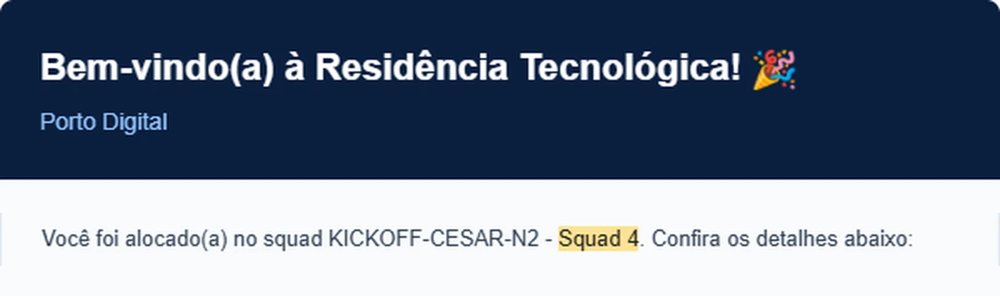
-
03/10/2026
O tema veio pronto. O olhar foi nosso.
No dia seguinte nos reunimos. O Porto Digital já tinha definido o tema de todos os squads: acessibilidade. Faltava decidir para quem, e a maioria chegou com a mesma resposta: quem toma remédio de uso contínuo e tem dificuldade para ler a caixa, enxergar a letra da bula ou lembrar a hora. Estava decidido. Na mesma semana, veio a primeira reunião com a monitoria.
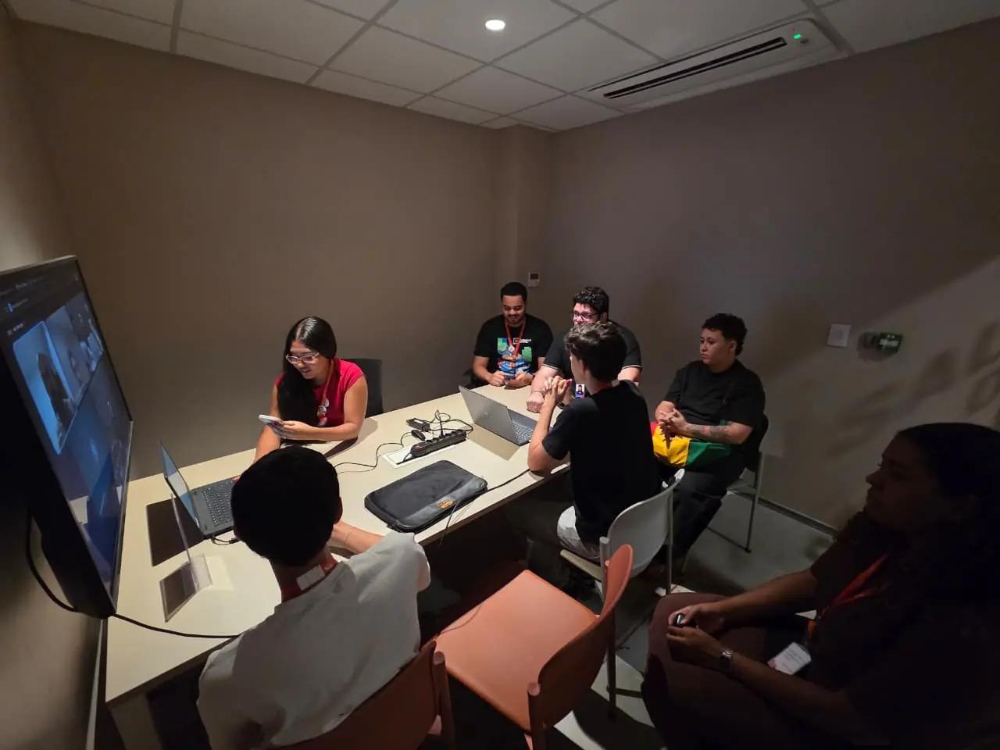
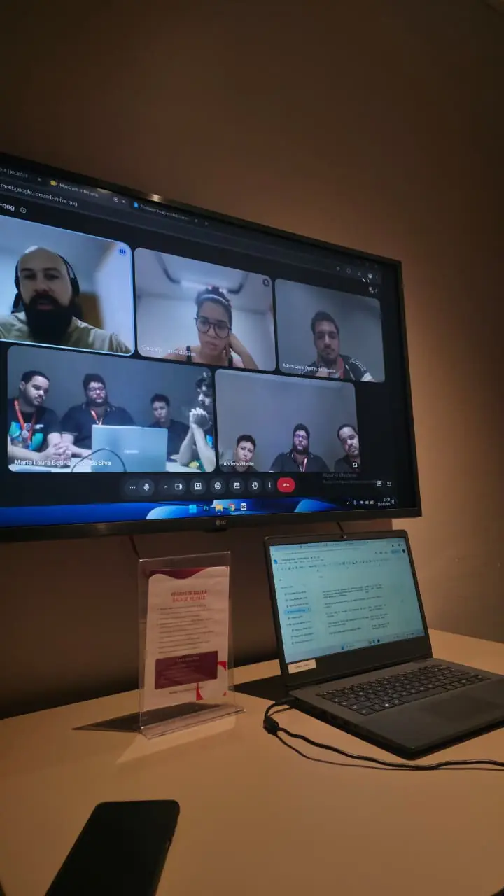
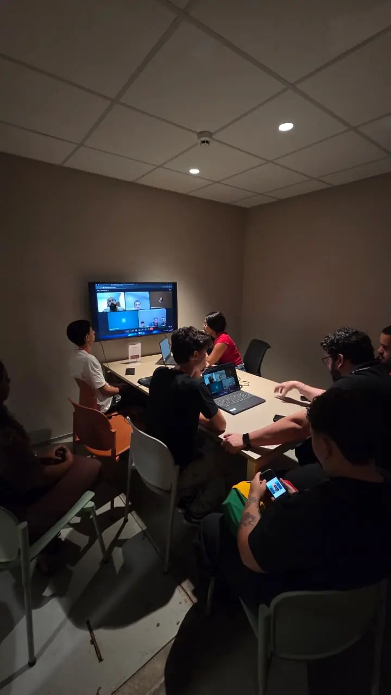
-
Outubro
Algumas semanas de pesquisa
A pesquisa levou algumas semanas. Juntamos dados públicos sobre adesão ao tratamento, leitura e baixa visão e comparamos com o que víamos em casa, já que a maioria de nós mora com alguém idoso. Daí saíram três personas: André, que precisa de ajuda; Patrícia, que cuida de um familiar; e Mariana, que quer se organizar sozinha.
O que mudouO problema deixou de ser “lembrar o horário” e passou a ser entender o remédio, tomar certo e ter alguém junto. -
09/10/2026
A primeira versão: Remédio Falado
Ainda no meio da pesquisa, saiu a primeira versão do app, com outro nome e outras cores. Ela já lia o código de barras da caixa, falava para que servia o remédio e lembrava a hora de tomar. Nos testes, quase todo mundo usou os remédios dos avós ou dos pais.
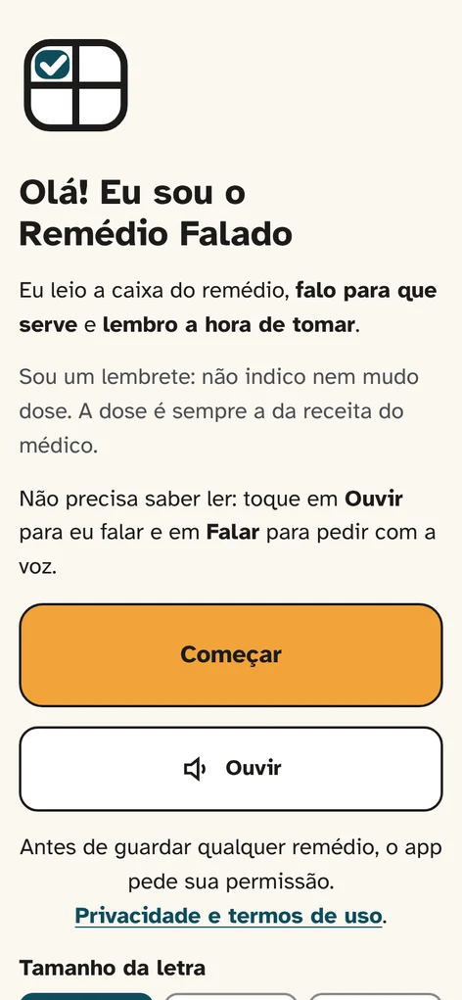
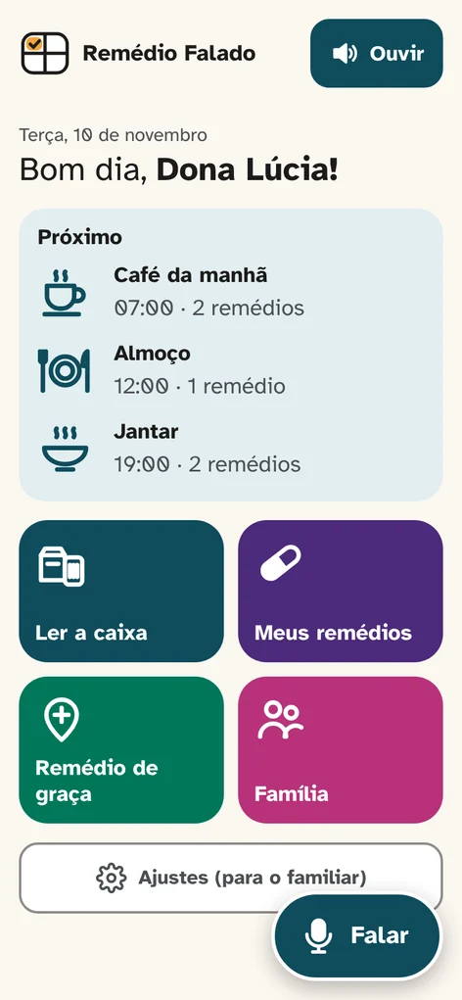
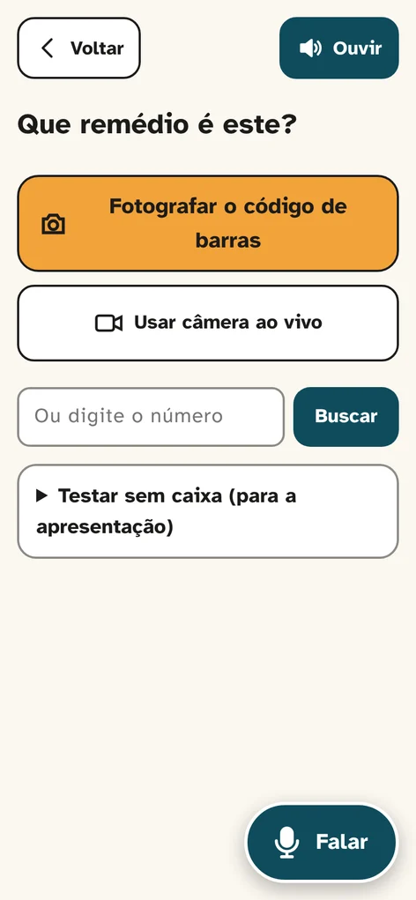
-
14/10/2026
Remédio de graça, perto de casa
Muita gente que toma remédio todo mês tem dificuldade para comprar. O app passou a mostrar as farmácias do Farmácia Popular e as unidades de saúde mais perto que fornecem o remédio. Aí esbarramos num problema: na UBS, não dava para saber antes se o remédio estava lá.
O que mudouIncluímos a atualização da quantidade de remédios disponível na unidade de saúde. -
23/10/2026
O projeto ficou maior que o nome
O Remédio Falado já fazia muito mais do que falar. Demoramos para trocar, mas trocamos: nasceu o BULA, Base Unificada de Linguagem Acessível, com o B em forma de balão de fala. Com o nome novo, entregamos o app para mais pessoas testarem e anotamos cada retorno. Foi aí que o projeto cresceu de verdade.
-
02/11/2026
A véspera
Faltava um dia para o kick-off. Estávamos nervosos e queríamos tudo impecável, então juntamos o que as pessoas que testaram o app tinham dito e passamos o dia ajustando.
O que mudou no app- Alarme em tela cheia, com o nome do remédio falado em voz alta
- Aviso para a família na hora em que uma dose atrasa
- Botão para pedir ajuda
- Calendário do mês com o que foi tomado
- Prazo do tratamento sugerido para antibióticos e remédios de uso curto
-
03/11/2026
Kick-off no Porto Digital
Chegou o dia de apresentar o BULA para a banca.
O que a banca pediuPensar em como o BULA cresce para além do poder público.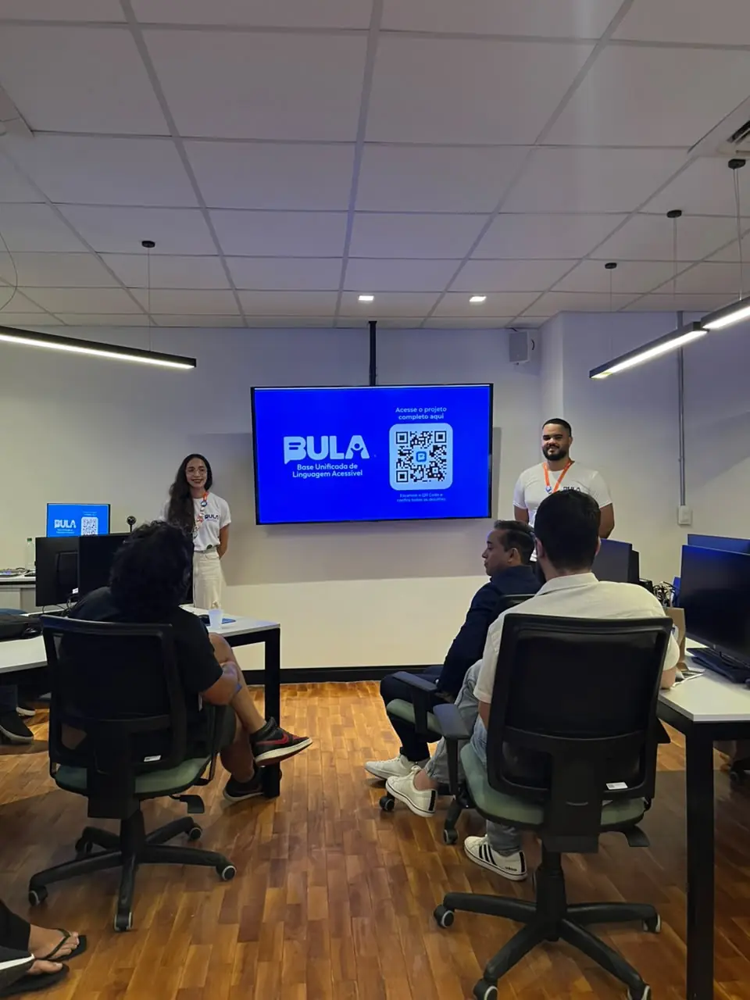
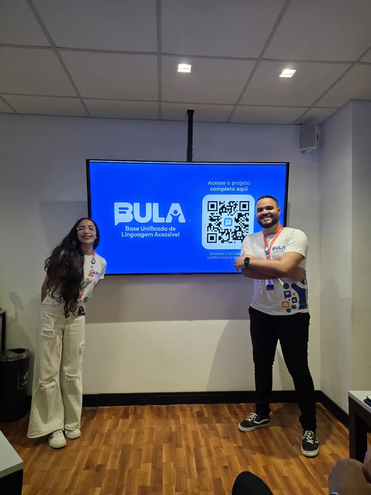
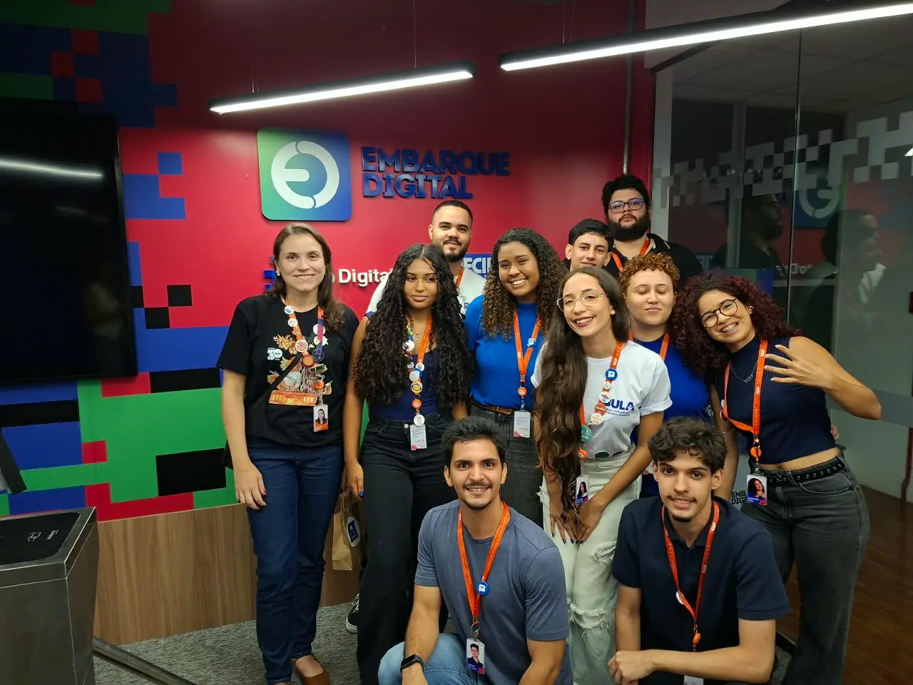
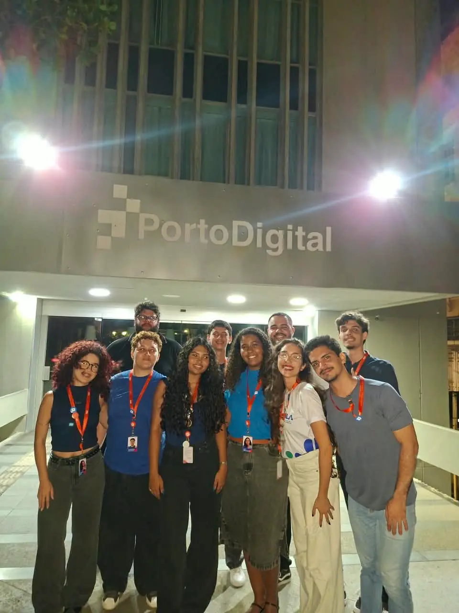
-
05/11/2026
Selecionados para o Demoday 2026.2
Dois dias depois, veio o resultado: o BULA estava entre os 12 squads selecionados para o Demoday.
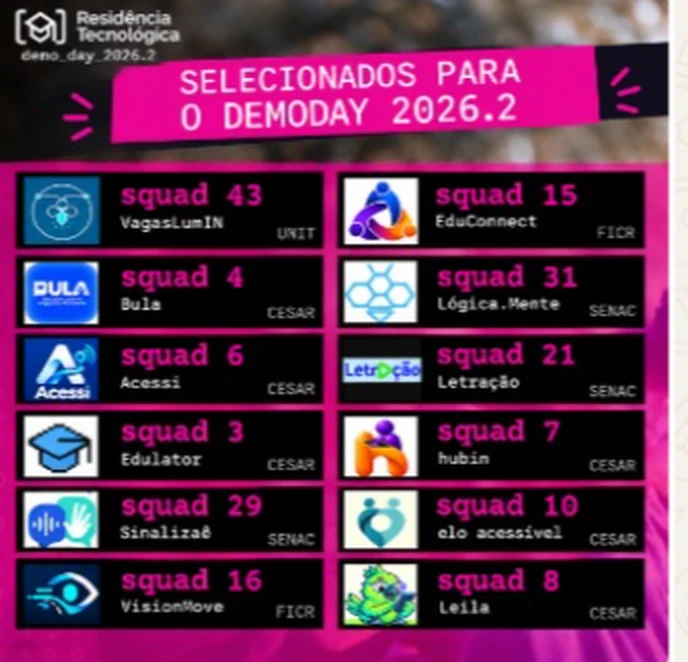
-
08 e 09/11/2026
Preparando o Demoday
Colocamos este site no ar, e o app ganhou a bula pelo QR code da caixa, um resumo em palavras simples, avisos entre remédios e comandos de voz.
-
10/11/2026
A última monitoria antes do Demoday
Com a nossa instrutora, revisamos o modelo de negócio, fechamos o que entra na primeira versão e ouvimos um pedido: contar no site a nossa história. Esta página nasceu dali.
O que mudou- Modelo de negócio: gratuito para quem usa, com governo e empresas parceiras
- Primeira versão focada em quatro coisas: entender, salvar, lembrar e alertar
-
Novembro de 2026
O BULA ganha Instagram
Abrimos o @bula.aplicativo para mostrar os bastidores e as novidades.
-
Próximos passos
Demoday em 13/11 e REC’n’Play
Teste com usuários, validação dos avisos com farmacêutico e o BULA no estande do Demoday.
Design thinking, uma etapa de cada vez
Cada decisão do BULA passou por estas etapas, e voltamos a elas sempre que um teste ou uma banca mostrou algo novo.
- Pesquisa
- Problema
- Concorrentes
- Mapa de empatia
- Personas
- Protótipo
- Validação
- Pitch
Usamos inteligência artificial como apoio na pesquisa, no código e nos textos. Tudo foi revisado e decidido pelo squad.
Squad 4 · CESAR School
 Adson de Oliveira
Adson de Oliveira Anderson Leite
Anderson Leite Gabriela Torres
Gabriela Torres Guilherme de Oliveira
Guilherme de Oliveira Isabelly Damazio
Isabelly Damazio Jack Guerra
Jack Guerra Julia Albuquerque
Julia Albuquerque Kaio Santiago
Kaio Santiago Laura Betina
Laura Betina Rafael Alves
Rafael Alves